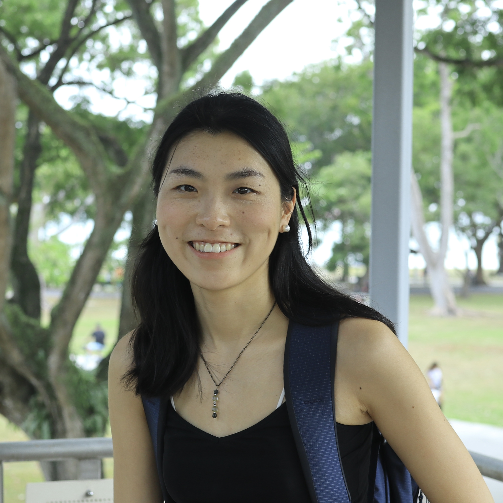

|
Luise Ge
email /
CV /
Teaching
I am a Computer Science PhD candidate at Washington University in St. Louis, advised by Prof. Yevgeniy Vorobeychik.
My current research interests are the foundations of AI (learning, reasoning, planning) and the computational aspects of social issues (alignment and mechanism deisgn)
I started out as a cognitive science student at the University of Edinburgh, with the passion to figure out how mind works. While this curiosity has never diminished, it just happened that the beauty of maths struck me greatly.
I ended up getting a MSc in pure maths at Imperial College London under the guidance of the amazing Paolo Cascini. My master thesis was on algebraic geometry inspired by a fantastic idea called "the periodic table of shapes".
I have turned back to CS due to both the philosophical considerations and social impact of many computational problems. Outside of research, I enjoy reading, writing, traveling, and engaging with art in all its forms.
|

|
{kind=link}